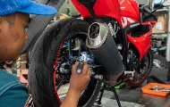

Cara Perawatan Motor
Cara pertama
Rutin mengganti oliMengganti oli mesin adalah salah satu perawatan penting. Oli mesin yang bersih dan segar membantu melumasi dan melindungi komponen mesin serta menjaga suhu operasi yang baik.
Cara Kedua
Pemeriksaan sistem bahan bakarSistem bahan bakar, termasuk karburator atau sistem injeksi, perlu diperiksa secara berkala untuk memastikan aliran bahan bakar yang tepat dan menggantikan filter bahan bakar jika diperlukan.
Cara ketiga
Pemeriksaan sistem pengeremanSistem pengereman yang berfungsi dengan baik merupakan faktor krusial untuk keamanan saat berkendara. Pemeriksaan secara berkala pada komponen pengereman seperti kampas rem, cakram rem, dan sistem hidrolik diperlukan, serta melakukan penggantian jika diperlukan.
Cara Keempat
Pemeriksaan banPemeriksaan secara rutin pada keausan ban, tekanan udara yang tepat, dan rotasi ban membantu memastikan keamanan dan kinerja kendaraan Anda.
Pemeliharaan
itu penting
Perawatan yang baik pada motor adalah investasi jangka panjang yang membantu menjaga kinerja, keandalan, keamanan, dan umur panjang motor Anda. Dengan merawat motor secara teratur, Anda dapat menikmati pengalaman berkendara yang lebih baik dan menghindari masalah yang dapat mengganggu perjalanan Anda.
Dengan menjaga komponen-komponen dan sparepart motor dalam kondisi yang baik, Anda dapat memastikan kinerja yang optimal dan mencegah terjadinya masalah yang dapat mengganggu performa kendaraan Anda dalam perjalanan.
Selanjutnya